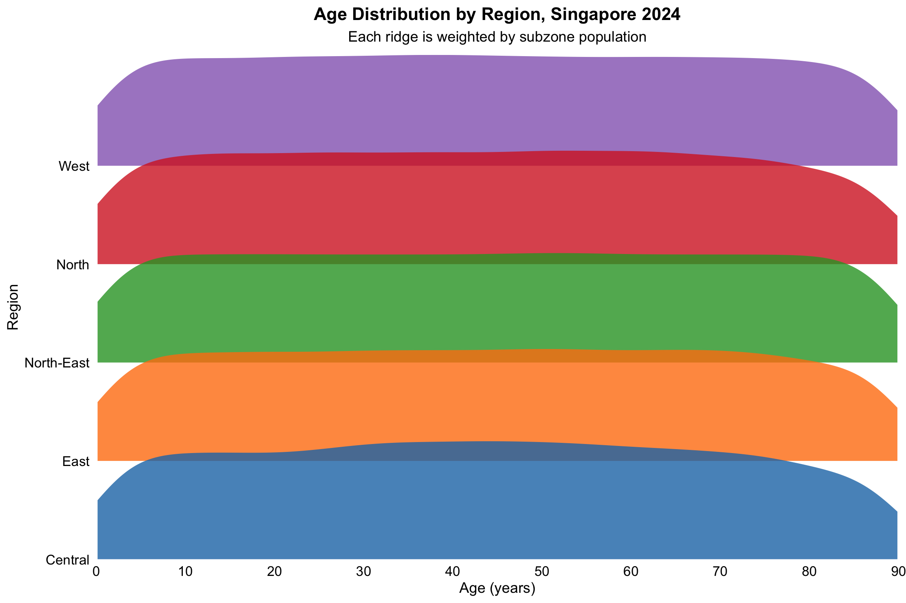
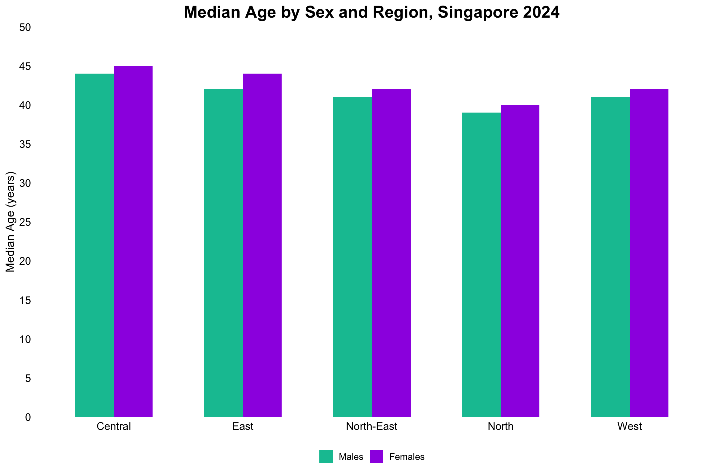
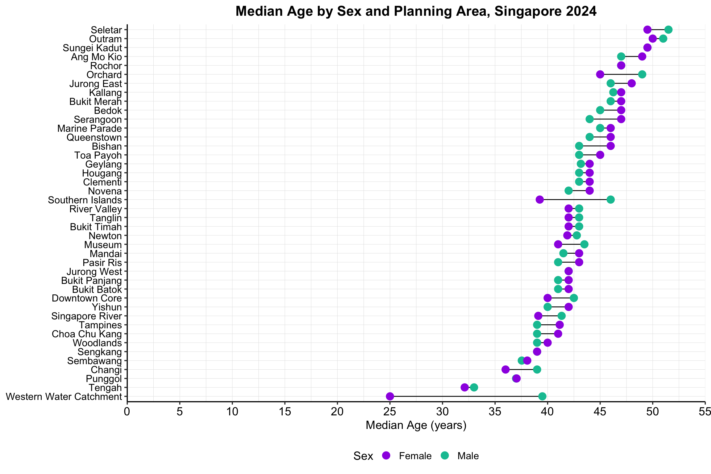

pacman::p_load(tidyverse, ggthemes,viridis,ggridges,ggrepel,patchwork, readr, dplyr, forcats, scales, ggtext, matrixStats)Take Home Assignment 1
Singapore’s 2024 Demographic Landscape: A Closer Look at Age, Gender and Geographic Distribution
1. Background
i. Importing Packages
ii. Importing Data
# 3.1 Import
sgdemo2024 <- read_csv(("data/respopagesex2024.csv"), show_col_types = FALSE)2.1 Quick check of data
glimpse(sgdemo2024)Rows: 60,424
Columns: 6
$ PA <chr> "Ang Mo Kio", "Ang Mo Kio", "Ang Mo Kio", "Ang Mo Kio", "Ang Mo K…
$ SZ <chr> "Ang Mo Kio Town Centre", "Ang Mo Kio Town Centre", "Ang Mo Kio T…
$ Age <chr> "0", "0", "1", "1", "2", "2", "3", "3", "4", "4", "5", "5", "6", …
$ Sex <chr> "Males", "Females", "Males", "Females", "Males", "Females", "Male…
$ Pop <dbl> 10, 10, 10, 10, 10, 10, 10, 10, 30, 10, 20, 10, 20, 30, 30, 10, 3…
$ Time <dbl> 2024, 2024, 2024, 2024, 2024, 2024, 2024, 2024, 2024, 2024, 2024,…3 Data Cleaning and Quality Checks
3.1 Converting Sex to a factor with the correct order
By coercing Sex into a factor with a known level order to give full, explicit control over how it’s displayed in every plot and keeps the downstream code faster and more robust.
sgdemo2024 <- sgdemo2024 %>%
mutate(
Sex = factor(Sex, levels = c("Males", "Females"))
)3.1 Count missing values by column
# 4.1 Check for missing values and confirm none
missing_counts <- sgdemo2024 %>%
summarise_all(~ sum(is.na(.)))
if (all(unlist(missing_counts) == 0)) {
cat("✅ No missing values, proceed to the next check\n")
} else {
warning("⚠️ Missing values detected:")
print(missing_counts)
}✅ No missing values, proceed to the next check3.2 Checking for any duplicates
dup_count <- sum(duplicated(sgdemo2024))
if (dup_count == 0) {
cat("✅ No duplicates, on to the next!\n")
} else {
warning("⚠️ Found duplicate rows:")
print(sgdemo2024[duplicated(sgdemo2024), ])
}✅ No duplicates, on to the next!3.3 Ensure population is strictly positive
Why we have to remove zero population rows
Scrolling through the data, I found zero-population rows which simply means that no one of that age and sex lives in that subzone. If we add these to the plot, it will
- Add unnecessary clutter of showing up thousands of empty bars or tiles that distract from where people actually live. More importantly,
- It obscures the story I am trying to tell - the audience cares about real population, not the zero-density grid.
# 1. Check for zero-population rows
zero_rows <- sgdemo2024 %>%
filter(Pop == 0)
if (nrow(zero_rows) > 0) {
cat("⚠️ Found", nrow(zero_rows), "rows with Pop == 0 (empty demographic cells):\n")
print(head(zero_rows)) # show a few examples
} else {
cat("✅ No zero‐population rows found.\n")
}⚠️ Found 23181 rows with Pop == 0 (empty demographic cells):
# A tibble: 6 × 6
PA SZ Age Sex Pop Time
<chr> <chr> <chr> <fct> <dbl> <dbl>
1 Ang Mo Kio Ang Mo Kio Town Centre 80 Males 0 2024
2 Ang Mo Kio Ang Mo Kio Town Centre 86 Males 0 2024
3 Ang Mo Kio Ang Mo Kio Town Centre 86 Females 0 2024
4 Ang Mo Kio Ang Mo Kio Town Centre 88 Males 0 2024
5 Ang Mo Kio Ang Mo Kio Town Centre 89 Males 0 2024
6 Ang Mo Kio Ang Mo Kio Town Centre 89 Females 0 2024# 2. Remove all zero‐population rows
sgdemo2024 <- sgdemo2024 %>%
filter(Pop > 0)# 3. Confirm removal
if (sum(sgdemo2024$Pop == 0) == 0) {
cat("✅ All zero‐population rows removed. Data is now focused on actual residents.\n")
}✅ All zero‐population rows removed. Data is now focused on actual residents.3.4 Check Age Range & Filter to Plausible Values
Converting entry “90 & Over” in Age Column
I will be converting this to a numeric value to plot my graphs. Afterwards, I will be labeling it during the plot. This is to ensure
- Analytics Integrity: Internally keeping Age=90 for all labelled “90 & Over” which allows me to do sums, means and such.
- Visual Clarity: On the axis or legend, the readers we see “90+” so there’s no confusion that the final bar or ridge covers all ages above 90.
# 1. Inspect column names to confirm they match expectations
print(colnames(sgdemo2024))[1] "PA" "SZ" "Age" "Sex" "Pop" "Time"# 2. Convert "Age" → numeric, mapping "90 & Over" → 90
sgdemo2024 <- sgdemo2024 %>%
mutate(
Age = parse_number(as.character(Age)),
Age = as.integer(Age)
)
# 3. Verify the transformation
age_stats <- sgdemo2024 %>%
summarise(
min_age = min(Age, na.rm = TRUE),
max_age = max(Age, na.rm = TRUE)
)
cat(sprintf(
"✅ Age conversion complete: now an integer from %d to %d.\n",
age_stats$min_age, age_stats$max_age
))✅ Age conversion complete: now an integer from 0 to 90.Final confirmation there are no more “90 & Over” entries in my data and Age column converted into integer.
sum(sgdemo2024$Age == "90 & Over")[1] 0cat("Age column type:", class(sgdemo2024$Age), "\n")Age column type: integer na_count <- sum(is.na(sgdemo2024$Age))
cat("Number of NA in Age after parsing:", na_count, "\n")Number of NA in Age after parsing: 0 3.5 Confirm Sex Factor Levels
Inspecting Sex column in data
The below code chunk will aim to ensure that there is plot consistency and reproducibility.
# 1. Count subzone‐level totals (SZ == "Total")
n_sz_total <- sum(sgdemo2024$SZ == "Total", na.rm = TRUE)
cat("Rows with SZ == \"Total\":", n_sz_total, "\n")Rows with SZ == "Total": 0 # 2. Count any Age == NA (originally "Total")
n_age_na <- sum(is.na(sgdemo2024$Age))
cat("Rows with Age == NA (was \"Total\"):", n_age_na, "\n")Rows with Age == NA (was "Total"): 0 # 3. Count any Sex == "Total"
n_sex_total <- sum(as.character(sgdemo2024$Sex) == "Total", na.rm = TRUE)
cat("Rows with Sex == \"Total\":", n_sex_total, "\n\n")Rows with Sex == "Total": 0 # 4. If any totals remain, peek at them
if (n_sz_total + n_age_na + n_sex_total > 0) {
cat("⚠️ Example summary‐row(s):\n")
sgdemo2024 %>%
filter(
SZ == "Total" |
is.na(Age) |
as.character(Sex) == "Total"
) %>%
slice_head(n = 5) %>%
print()
} else {
cat("✅ No summary‐row entries remain. You’re all set.\n")
}✅ No summary‐row entries remain. You’re all set.# Define the expected order
expected_levels <- c("Males", "Females")
# Inspect the current factor levels
actual_levels <- levels(sgdemo2024$Sex)
cat("Current Sex levels:", paste(actual_levels, collapse = ", "), "\n")Current Sex levels: Males, Females # Compare and act
if (identical(actual_levels, expected_levels)) {
cat("✅ Sex factor levels are already correct (Males, Females).\n")
} else {
warning("⚠️ Sex factor levels are not as expected. Resetting to Males, Females.")
sgdemo2024 <- sgdemo2024 %>%
mutate(Sex = factor(Sex, levels = expected_levels))
cat("✅ Sex factor levels have been reset to:",
paste(levels(sgdemo2024$Sex), collapse = ", "), "\n")
}✅ Sex factor levels are already correct (Males, Females).3.5 Checking for any ‘Total’ in Columns
Final check and summary
Let’s confirm that there are no values ‘Total’ in any of our columns so that we know our dataset is purely the granular, inhabited cells. It is not only for housekeeping, but to safeguard my visualisations and summary statistics to truly reflect Singapore’s lived population in 2024.
# 1. Count subzone‐level totals (SZ == "Total")
n_sz_total <- sum(sgdemo2024$SZ == "Total", na.rm = TRUE)
cat("Rows with SZ == \"Total\":", n_sz_total, "\n")Rows with SZ == "Total": 0 # 2. Count any Age == NA (originally "Total")
n_age_na <- sum(is.na(sgdemo2024$Age))
cat("Rows with Age == NA (was \"Total\"):", n_age_na, "\n")Rows with Age == NA (was "Total"): 0 # 3. Count any Sex == "Total"
n_sex_total <- sum(as.character(sgdemo2024$Sex) == "Total", na.rm = TRUE)
cat("Rows with Sex == \"Total\":", n_sex_total, "\n\n")Rows with Sex == "Total": 0 # 4. If any totals remain, peek at them
if (n_sz_total + n_age_na + n_sex_total > 0) {
cat("⚠️ Example summary‐row(s):\n")
sgdemo2024 %>%
filter(
SZ == "Total" |
is.na(Age) |
as.character(Sex) == "Total"
) %>%
slice_head(n = 5) %>%
print()
} else {
cat("✅ No summary‐row entries remain. You’re all set.\n")
}✅ No summary‐row entries remain. You’re all set.3.6 Final Summary
We are finally done with cleaning the data and converting what’s needed to provide truthful and accurate data. Below is a quick summary of our freshly cleaned data!
# High‐Level Summary of Cleaned Data
summary_tbl <- sgdemo2024 %>%
summarise(
total_records = n(),
total_population = sum(Pop),
n_PAs = n_distinct(PA),
n_SZs = n_distinct(SZ)
)
# Print the summary table
print(summary_tbl)# A tibble: 1 × 4
total_records total_population n_PAs n_SZs
<int> <dbl> <int> <int>
1 37243 4193530 42 235# Confirmation message
cat(sprintf(
"✅ Data summary complete: %d records, total population %d, across %d PAs and %d subzones.\n",
summary_tbl$total_records,
summary_tbl$total_population,
summary_tbl$n_PAs,
summary_tbl$n_SZs
))✅ Data summary complete: 37243 records, total population 4193530, across 42 PAs and 235 subzones.# Show random rows
set.seed(2025)
sgdemo2024 %>%
slice_sample(prop = 0.01)# A tibble: 372 × 6
PA SZ Age Sex Pop Time
<chr> <chr> <int> <fct> <dbl> <dbl>
1 Tampines Tampines North 68 Males 70 2024
2 Toa Payoh Boon Teck 41 Females 80 2024
3 Toa Payoh Joo Seng 50 Males 60 2024
4 Bukit Panjang Dairy Farm 71 Males 30 2024
5 Ang Mo Kio Yio Chu Kang East 56 Males 40 2024
6 Queenstown Commonwealth 73 Males 30 2024
7 Bukit Merah Redhill 44 Males 80 2024
8 Clementi Sunset Way 68 Females 60 2024
9 Jurong West Jurong West Central 10 Females 300 2024
10 Bukit Timah Anak Bukit 51 Males 150 2024
# ℹ 362 more rows4 Population Pyramid
# 1. Prepare pyramid data with percentages
pyr_df <- sgdemo2024 %>%
mutate(
AgeGroup = cut(
Age,
breaks = c(-1, seq(4, 89, 5), Inf),
labels = c(paste0(seq(0, 85, 5), "-", seq(4, 89, 5)), "90+"),
right = TRUE
)
) %>%
group_by(AgeGroup, Sex) %>%
summarise(Pop = sum(Pop), .groups = "drop") %>%
group_by(Sex) %>%
mutate(
SexTotal = sum(Pop),
Perc = Pop / SexTotal * 100,
LabelPerc = sprintf("%.1f%%", Perc),
PopK = Pop / 1000,
PopSignK = if_else(Sex == "Males", -PopK, PopK)
) %>%
ungroup()
# 2. Compute subtitle text with grand totals and percentages
total_all <- sum(pyr_df$Pop)
total_males <- sum(pyr_df$Pop[pyr_df$Sex == "Males"])
total_females <- sum(pyr_df$Pop[pyr_df$Sex == "Females"])
pct_males <- total_males / total_all * 100
pct_females <- total_females / total_all * 100
subtitle_text <- paste0(
"Total population: ", scales::comma(total_all), "\n",
"Males: ", scales::comma(total_males), " (", sprintf("%.1f%%", pct_males), ") | ",
"Females: ", scales::comma(total_females), " (", sprintf("%.1f%%", pct_females), ")"
)
# 3. Fixed axis limits
lim <- 180
breaks <- seq(-lim, lim, by = 10)
# 4. Plot
ggplot(pyr_df, aes(x = PopSignK, y = AgeGroup, fill = Sex)) +
geom_col(width = 0.8) +
# Male % labels
geom_text(
data = filter(pyr_df, Sex == "Males"),
aes(label = LabelPerc),
hjust = 1.1, nudge_x = -1.5,
size = 3.5, color = "black"
) +
# Female % labels
geom_text(
data = filter(pyr_df, Sex == "Females"),
aes(label = LabelPerc),
hjust = 0, nudge_x = 1.5,
size = 3.5, color = "black"
) +
scale_fill_manual(values = c("Males" = "#00C2A1", "Females" = "#9E00E3")) +
scale_x_continuous(
breaks = breaks,
labels = function(x) abs(x),
limits = c(-lim, lim),
expand = c(0, 0)
) +
geom_vline(xintercept = 0, color = "grey50", size = 0.3) +
coord_cartesian(clip = "off") +
labs(
title = "Singapore Population by Age Group, 2024",
subtitle = subtitle_text,
x = "Population (’000)",
y = "Age Group",
fill = NULL
) +
theme_minimal(base_size = 14) +
theme(
panel.border = element_rect(color = "black", fill = NA, size = 0.2),
plot.title = element_text(size = 18, face = "bold", hjust = 0.5),
plot.subtitle = element_text(size = 12, hjust = 0.5, margin = margin(b = 10)),
axis.text.y = element_text(size = 10, color = "black"),
axis.text.x = element_text(size = 10, color = "black"),
panel.grid.major.y = element_blank(),
panel.grid.minor = element_blank(),
legend.position = "bottom",
plot.margin = margin(5, 40, 5, 5)
)
cohort_df <- sgdemo2024 %>%
mutate(
CohortKey = case_when(
Age <= 19 ~ "young",
Age >= 65 ~ "elderly",
TRUE ~ "labour"
)
) %>%
group_by(CohortKey) %>%
summarise(TotalPop = sum(Pop), .groups = "drop") %>%
mutate(
TotalK = TotalPop / 1000,
Perc = TotalPop / sum(TotalPop) * 100,
LabelFull = paste0(
sprintf("%.1f%%", Perc),
"\n(",
scales::comma(TotalPop),
")"
),
CohortLabel = case_when(
CohortKey == "young" ~ "**Young Dependents**<br>Age: 0 to 19",
CohortKey == "labour" ~ "**Labour Force**<br>Age: 20 to 64",
CohortKey == "elderly" ~ "**Elderly Dependents**<br>Age: 65+"
) %>%
factor(levels = c(
"**Young Dependents**<br>Age: 0 to 19",
"**Labour Force**<br>Age: 20 to 64",
"**Elderly Dependents**<br>Age: 65+"
))
)
# Computing grand total
grand_total <- sum(cohort_df$TotalPop)
# Adjust the x-axis limit so that values don't get cut off
max_k <- 3000
nudge_amt <- max_k * 0.02
# Removing grid for minimalist approach
ggplot(cohort_df, aes(x = TotalK, y = CohortLabel)) +
geom_col(fill = "#ACE1AF", width = 0.6) +
geom_text(aes(label = LabelFull),
hjust = 0,
nudge_x = nudge_amt,
size = 5,
lineheight = 0.9,
color = "black") +
scale_x_continuous(
name = "Population (’000)",
breaks = seq(0, max_k, by = 250),
limits = c(0, max_k),
expand = expansion(mult = c(0, 0.05)),
labels = function(x) x
) +
labs(
title = "Population by Dependency Category, Singapore 2024",
subtitle = paste0("Total population: ", scales::comma(grand_total)),
x = NULL,
y = NULL
) +
theme_minimal(base_size = 14) +
theme(
panel.grid.major = element_blank(),
panel.grid.minor = element_blank(),
axis.text.y = element_markdown(size = 12, color = "black"),
axis.text.x = element_text(size = 12, color = "black"),
plot.title = element_text(size = 18, face = "bold", hjust = 0.5),
plot.subtitle = element_text(size = 12, hjust = 0.5, margin = margin(b = 10)),
legend.position = "none",
plot.margin = margin(10, 40, 10, 10)
)
# 1. Define PA → Region lookup lists
central <- c("Bishan","Bukit Merah","Bukit Timah","Downtown Core","Geylang",
"Kallang","Marina East","Marina South","Marine Parade","Museum",
"Newton","Novena","Orchard","Outram","Queenstown","River Valley",
"Rochor","Singapore River","Southern Islands","Straits View",
"Tanglin","Toa Payoh")
east <- c("Bedok","Changi","Changi Bay","Pasir Ris","Paya Lebar","Tampines")
north <- c("Central Water Catchment","Lim Chu Kang","Mandai","Sembawang",
"Simpang","Sungei Kadut","Woodlands","Yishun")
north_east <- c("Ang Mo Kio","Hougang","North-Eastern Islands","Punggol",
"Seletar","Sengkang","Serangoon")
west <- c("Boon Lay","Bukit Batok","Bukit Panjang","Choa Chu Kang",
"Clementi","Jurong East","Jurong West","Pioneer","Tengah",
"Tuas","Western Islands","Western Water Catchment")
# 2. Build heatmap data
tile_df <- sgdemo2024 %>%
mutate(
Region = case_when(
PA %in% central ~ "Central",
PA %in% east ~ "East",
PA %in% north ~ "North",
PA %in% north_east ~ "North-East",
PA %in% west ~ "West",
TRUE ~ NA_character_
)
) %>%
filter(!is.na(Region)) %>%
mutate(
AgeBand = cut(
Age,
breaks = c(seq(0, 90, by = 5), Inf),
right = FALSE,
labels = c(paste0(seq(0,85,5), "-", seq(4,89,5)), "90+")
)
) %>%
group_by(Region, AgeBand) %>%
summarise(Pop = sum(Pop), .groups = "drop") %>%
mutate(
Region = factor(Region, levels = c("Central","East","North","North-East","West")),
AgeBand = factor(AgeBand, levels = c(paste0(seq(0,85,5), "-", seq(4,89,5)), "90+"))
)
# 3. Plot
ggplot(tile_df, aes(x = Region, y = AgeBand, fill = Pop)) +
geom_tile(color = "white") +
scale_fill_viridis_c(name = "Population", option = "C", labels = comma) +
labs(
title = "Heatmap of Age Population by Region, Singapore 2024",
x = "Region",
y = "Age Band"
) +
theme_minimal(base_size = 14) +
theme(
axis.text.x = element_text(face="bold", size = 12, color = "black"),
axis.text.y = element_text(size = 14, color = "black"),
panel.grid.major = element_blank(),
panel.grid.minor = element_blank(),
legend.position = "right",
plot.title = element_text(size = 16, face="bold", hjust = 0.5),
axis.ticks = element_blank(),
panel.border = element_blank()
)
# Assign each PA to its region
ridge_region <- sgdemo2024 %>%
mutate(
Region = case_when(
PA %in% central ~ "Central",
PA %in% east ~ "East",
PA %in% north ~ "North",
PA %in% north_east ~ "North-East",
PA %in% west ~ "West"
),
Region = factor(Region, levels = c("Central","East","North-East","North","West"))
) %>%
select(Age, Pop, Region)
# Plot ridgelines without trimming and starting at the axis
ggplot(ridge_region, aes(x = Age, y = Region, weight = Pop, fill = Region)) +
geom_density_ridges(
scale = 1.2,
rel_min_height = 0.01,
color = NA,
alpha = 0.8
) +
scale_x_continuous(
name = "Age (years)",
breaks = seq(0, 90, 10),
limits = c(0, 90),
expand = c(0, 0)
) +
scale_y_discrete(expand = c(0, 0)) +
scale_fill_manual(values = c(
Central = "#1f77b4",
East = "#ff7f0e",
`North-East` = "#2ca02c",
North = "#d62728",
West = "#9467bd"
)) +
labs(
title = "Age Distribution by Region, Singapore 2024",
subtitle = "Each ridge is weighted by subzone population"
) +
theme_minimal(base_size = 14) +
theme(
legend.position = "none",
plot.title = element_text(face = "bold", hjust = 0.5),
plot.subtitle = element_text(hjust = 0.5, margin = margin(b = 10)),
axis.text.x = element_text(color = "black", size = 13),
axis.text.y = element_text(color = "black", size = 13),
panel.grid.major = element_blank(),
panel.grid.minor = element_blank()
)
# 1. Define PA → Region lookup
central <- c("Bishan","Bukit Merah","Bukit Timah","Downtown Core","Geylang",
"Kallang","Marina East","Marina South","Marine Parade","Museum",
"Newton","Novena","Orchard","Outram","Queenstown","River Valley",
"Rochor","Singapore River","Southern Islands","Straits View",
"Tanglin","Toa Payoh")
east <- c("Bedok","Changi","Changi Bay","Pasir Ris","Paya Lebar","Tampines")
north <- c("Central Water Catchment","Lim Chu Kang","Mandai","Sembawang",
"Simpang","Sungei Kadut","Woodlands","Yishun")
north_east <- c("Ang Mo Kio","Hougang","North-Eastern Islands","Punggol",
"Seletar","Sengkang","Serangoon")
west <- c("Boon Lay","Bukit Batok","Bukit Panjang","Choa Chu Kang",
"Clementi","Jurong East","Jurong West","Pioneer","Tengah",
"Tuas","Western Islands","Western Water Catchment")
# 2. Compute weighted median age by Region & Sex
region_med <- sgdemo2024 %>%
mutate(
Region = case_when(
PA %in% central ~ "Central",
PA %in% east ~ "East",
PA %in% north ~ "North",
PA %in% north_east ~ "North-East",
PA %in% west ~ "West",
),
Region = factor(Region, levels = c("Central","East","North-East","North","West"))
) %>%
group_by(Region, Sex) %>%
summarise(
MedAge = matrixStats::weightedMedian(Age, w = Pop),
.groups = "drop"
)
# 3. Plot grouped bar chart with no gap, 5-year bins, no grid lines
ggplot(region_med, aes(x = Region, y = MedAge, fill = Sex)) +
geom_col(
position = position_dodge(width = 0.6),
width = 0.6
) +
scale_fill_manual(values = c("Males" = "#00C2A1", "Females" = "#9E00E3")) +
scale_y_continuous(
breaks = seq(0, 50, by = 5),
limits = c(0, 50),
expand = c(0, 0)
) +
labs(
title = "Median Age by Sex and Region, Singapore 2024",
x = NULL,
y = "Median Age (years)",
fill = NULL
) +
theme_minimal(base_size = 14) +
theme(
plot.title = element_text(hjust = 0.5, face = "bold", size = 20),
axis.text.x = element_text(color = "black", size = 13),
axis.text.y = element_text(color = "black", size = 13),
panel.grid.major = element_blank(),
panel.grid.minor = element_blank(),
legend.position = "bottom"
)
# 1. Compute weighted median age by PA & sex
med_age <- sgdemo2024 %>%
group_by(PA, Sex) %>%
summarise(
MedAge = matrixStats::weightedMedian(Age, w = Pop),
.groups = "drop"
) %>%
pivot_wider(
names_from = Sex,
values_from = MedAge
) %>%
rename(Male = Males, Female = Females) %>%
arrange((Male + Female) / 2) %>%
mutate(PA = factor(PA, levels = PA))
# 2. Plot static dumbbell-like chart with legend on the right
ggplot(med_age, aes(y = PA)) +
# a) connecting lines
geom_segment(aes(x = Male, xend = Female, yend = PA),
color = "black", size = 0.5) +
# b) male points
geom_point(aes(x = Male, color = "Male"), size = 4) +
# c) female points
geom_point(aes(x = Female, color = "Female"), size = 4) +
# 3. Scale and legend
scale_color_manual(
name = "Sex",
values = c("Male" = "#00C2A1", "Female" = "#9E00E3")
) +
scale_x_continuous(
breaks = seq(0, 55, by = 5),
labels = seq(0, 55, by = 5),
limits = c(0, 55),
expand = c(0, 0)
) +
labs(
title = "Median Age by Sex and Planning Area, Singapore 2024",
x = "Median Age (years)",
y = NULL,
color = NULL
) +
theme_classic(base_size = 14) +
theme(
plot.title = element_text(hjust = 0.5, face = "bold"),
axis.text.x = element_text(color = "black", size = 14),
axis.title.x = element_text(size = 14),
axis.text.y = element_text(color = "black", size = 12),
panel.grid.major.x = element_line(color = "grey90", size = 0.2),
panel.grid.minor.x = element_line(color = "grey90", size = 0.2),
panel.grid.major.y = element_line(color = "grey90", size = 0.2),
panel.grid.minor.y = element_line(color = "grey90", size = 0.2),
legend.position = "bottom",
legend.justification = "top",
legend.text = element_text(size = 12)
)
`
# 1. Install / load
if (!requireNamespace("gt", quietly = TRUE)) install.packages("gt")
if (!requireNamespace("matrixStats", quietly = TRUE)) install.packages("matrixStats")
library(dplyr)
library(matrixStats) # for weightedMedian()
library(gt)
library(scales)
# 2. Define Region lookup
central <- c("Bishan","Bukit Merah","Bukit Timah","Downtown Core","Geylang",
"Kallang","Marina East","Marina South","Marine Parade","Museum",
"Newton","Novena","Orchard","Outram","Queenstown","River Valley",
"Rochor","Singapore River","Southern Islands","Straits View",
"Tanglin","Toa Payoh")
east <- c("Bedok","Changi","Changi Bay","Pasir Ris","Paya Lebar","Tampines")
north <- c("Central Water Catchment","Lim Chu Kang","Mandai","Sembawang",
"Simpang","Sungei Kadut","Woodlands","Yishun")
north_east <- c("Ang Mo Kio","Hougang","North-Eastern Islands","Punggol",
"Seletar","Sengkang","Serangoon")
west <- c("Boon Lay","Bukit Batok","Bukit Panjang","Choa Chu Kang",
"Clementi","Jurong East","Jurong West","Pioneer","Tengah",
"Tuas","Western Islands","Western Water Catchment")
# 3. Summarise at PA‐level, tagging Region
pa_summary <- sgdemo2024 %>%
mutate(
Region = case_when(
PA %in% central ~ "Central",
PA %in% east ~ "East",
PA %in% north ~ "North",
PA %in% north_east ~ "North-East",
PA %in% west ~ "West"
)
) %>%
group_by(Region, PA) %>%
summarise(
TotalPop = sum(Pop),
MedAge = matrixStats::weightedMedian(Age, w = Pop),
.groups = "drop"
) %>%
arrange(factor(Region, c("Central","East","North-East","North","West")), PA)
# 4. Define color‐blind safe palette (only actual regions)
region_colors <- c(
Central = "#1f77b4",
East = "#ff7f0e",
`North-East`= "#2ca02c",
North = "#d62728",
West = "#9467bd"
)
# 5. Render gt table
pa_summary %>%
gt(
rowname_col = "PA",
groupname_col = "Region"
) %>%
tab_header(
title = md("**Singapore 2024 — Planning Area Summary**")
) %>%
fmt_number(
columns = vars(TotalPop),
decimals = 0,
suffixing = FALSE
) %>%
fmt_number(
columns = vars(MedAge),
decimals = 1
) %>%
{
tbl <- .
for(reg in names(region_colors)) {
tbl <- tbl %>%
tab_style(
style = list(
cell_fill(color = region_colors[[reg]]),
cell_text(weight = "bold", color = "white")
),
locations = cells_row_groups(groups = reg)
)
}
tbl
} %>%
cols_label(
TotalPop = "Total Population",
MedAge = "Median Age"
) %>%
tab_options(
table.font.size = px(12),
row_group.font.weight = "bold",
row_group.padding = px(4)
)| Singapore 2024 — Planning Area Summary | ||
|---|---|---|
| Total Population | Median Age | |
| Central | ||
| Bishan | 88,210 | 45.0 |
| Bukit Merah | 149,390 | 47.0 |
| Bukit Timah | 84,250 | 42.0 |
| Downtown Core | 4,170 | 41.0 |
| Geylang | 116,820 | 44.0 |
| Kallang | 101,190 | 47.0 |
| Marine Parade | 46,950 | 45.0 |
| Museum | 530 | 42.0 |
| Newton | 9,910 | 42.0 |
| Novena | 52,150 | 43.0 |
| Orchard | 870 | 46.0 |
| Outram | 16,740 | 50.0 |
| Queenstown | 102,040 | 45.0 |
| River Valley | 11,970 | 42.9 |
| Rochor | 13,040 | 47.0 |
| Singapore River | 4,200 | 40.0 |
| Southern Islands | 2,580 | 42.6 |
| Tanglin | 24,540 | 42.0 |
| Toa Payoh | 140,030 | 44.0 |
| East | ||
| Bedok | 277,660 | 46.0 |
| Changi | 1,830 | 37.0 |
| Pasir Ris | 145,480 | 42.0 |
| Tampines | 284,950 | 40.0 |
| North-East | ||
| Ang Mo Kio | 160,450 | 48.0 |
| Hougang | 228,780 | 44.0 |
| Punggol | 199,880 | 37.0 |
| Seletar | 140 | 51.0 |
| Sengkang | 265,550 | 39.0 |
| Serangoon | 118,250 | 45.0 |
| North | ||
| Mandai | 2,130 | 42.0 |
| Sembawang | 110,670 | 38.0 |
| Sungei Kadut | 600 | 49.5 |
| Woodlands | 255,510 | 39.0 |
| Yishun | 230,320 | 41.0 |
| West | ||
| Bukit Batok | 168,390 | 41.3 |
| Bukit Panjang | 138,730 | 42.0 |
| Choa Chu Kang | 190,640 | 40.0 |
| Clementi | 102,960 | 44.0 |
| Jurong East | 74,590 | 47.0 |
| Jurong West | 257,910 | 42.0 |
| Tengah | 7,940 | 32.9 |
| Western Water Catchment | 590 | 30.0 |